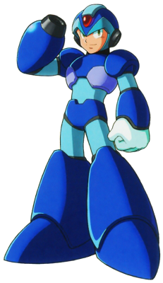
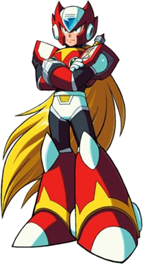
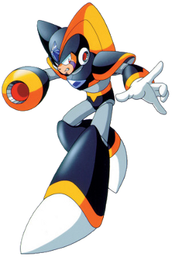

Mega Man X
 X, the main protagonist from the Mega Man X series, is the successor of the original Megaman and a Class S Maverick Hunter. Built by Dr. Light, X is a revolutionary new robot prototype that has the ability to think and make descisions. In addition, X is able to extend his capabilites through various armour upgrades, giving him limitless potential. In this game, X is equipped with his Fourth Armour from Megaman X4. X is equipped with a potent X-Buster that can fire off both high power charge blasts that cripple the enemy's health and standard pellet shots that can stun the enemy momentarily while X adjusts his positioning. However, X's armour is quite heavy and slows him down, so X must engage the boost fuctionality to maintain the proper spacing between himself and his opponent.
Characteristics
- Attack Power: 6.5
- Defense: 6.0
- Mobility: 4.0
- Recommended Skill Level: Beginner/Intermediate
Attacks
- X-Buster Shot (Attack)
- X-Charge Shot (Charge Lv1 + RELEASE Attack)
- X-Mega Blast (Charge Lv2 + RELEASE Attack)
Special Abilities
- Charge (HOLD Attack)
Zero
 Zero is an advanced robot and one of the main protagonists of Mega Man X series and Mega Man Zero series. A high ranking Maverick Hunter, legendary freedom fighter, and die hard warrior who will fight anyone, anywhere, at any time, Zero is well known as X's partner and the original source of the Maverick Virus. He is incredibly powerful and will fight any enemy, human or Maverick. Zero is equipped with the versatile Z-Saber that he uses with great skill by chaining together several attacks at once. Zero also has several advanced techniques he can invoke to further increase the versatility of the Z-Saber. However, the Z-Saber is a close range weapon, so Zero must close in on his enemy to do any significant damage.
Characteristics
- Attack Power: 5.0
- Defense: 4.5
- Mobility: 7.0
- Recommended Skill Level: Advanced
Attacks
- Z-Saber Slash (Attack)
- Triple Saber Combo (Attack x3)
- Skull Crush (Forward + Attack)
- Shippuga (Dash + Attack) [Hurrican Fang Strike]
- Ryuenjin (Up + Attack) [Dragon Flame Blade]
- Hyouretsuzan (In Air + Down + Attack) [Ice Fury Slash]
- Kuuenzan (In Air + Up + Attack) [Air Circling Slash]
Special Abilities
- Double Jump (In Air + Jump)
Bass
 Bass is an advanced robot created by Dr. Wily in the process of studying and eventually surpassing Mega Man's power. As the prominent anti-hero of the Mega Man Classic series, Bass has an arrogant personality, often degrading other "inferior" robots around him, including his rival Mega Man. Bass is equipped with a modification of the Mega Buster known as the Bass Buster, which infuses standard weapon shots with highly radioactive Bassnium, increasing the speed and firing rate of the shots. In addition, the Bass Buster is capable of aiming in any direction and has rapid fire machine-gun-like functionality. However, these enhancements come at the cost of being unable to move or jump when firing the Bass Buster, so Bass must keep his distance to avoid taking damage.
Characterisitics
- Attack Power: 6.0
- Defense: 4.0
- Mobility: 5.0
- Recommended Skill Level: Intermediate
Attacks
- Bass Buster Shot (Attack)
- Engage Rapid Fire (HOLD Attack)
Special Abilities
- Double Jump (In Air + Jump)
- Cannot Dash
- Cannot Wall Jump
- Cannot Slide